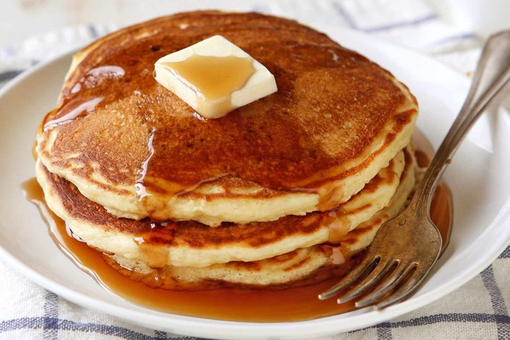

Buttermilk Pancakes

Description
A very light and fluffy pancake recipe that requires fresh buttermilk,
but it's the best I've ever made!
As convenient as a store-bought mix can be,
every home cook needs a good buttermilk pancake recipe in their repertoire.
Don't have a tried-and-true favorite yet? You're in luck!
There's nothing like plain buttermilk pancakes topped with maple syrup.
But, if you're in the mood to add something extra to your breakfast, you can!
Optional mix-ins include chocolate chips, berries, and nuts.
You could also add cinnamon and vanilla to the batter for a little extra warmth.
Instead of syrup, you could top your buttermilk pancakes with
jam or honey for a sweet twist on a classic.
Ingredients
- 3 cups all-purpose flour
- 3 tablespoons white sugar
- 3 teaspoons baking powder
- 1 ½ teaspoons baking soda
- ¾ teaspoon salt
- 3 cups buttermilk
- ½ cup milk
- 3 eggs
- ⅓ cup butter, melted
Directions
- Combine flour, sugar, baking powder, baking soda, and salt in a large bowl.
Beat together buttermilk, milk, eggs, and melted butter in a separate bowl.
Keep the two mixtures separate until you are ready to cook.
- Heat a lightly oiled griddle or frying pan over medium-high heat.
You can flick water across the surface and if it beads up and sizzles,
it's ready.
- Pour the wet mixture into the dry mixture; use a wooden spoon or fork
to mix until it's just blended together.
The batter will be a little lumpy which is what you want.
- Pour or scoop the batter onto the preheated griddle,
using approximately 1/2 cup for each pancake.
Cook until bubbles appear on the surface, 1 to 2 minutes;
flip with a spatula and cook until browned on the other side.
Repeat with remaining batter.
- Serve hot and enjoy!